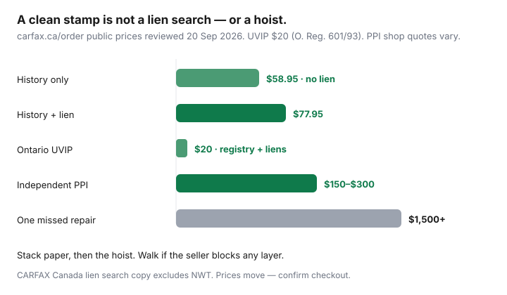

Transportation · Canada
How to read a CARFAX Canada report so you do not miss liens and write-offs
A “clean CARFAX” stamp is how a lot of Canadian private ads close. Buyers glance at a green badge, skip the lien line, and miss a write-off brand or a two-year service gap. CARFAX Canada is a useful commercial history report — accidents some insurers and shops reported, odometer snapshots, service visits, some U.S. history. It is not a lien search unless you buy that SKU, not an Ontario UVIP, and not a hoist inspection. This is how to read the Canadian product so you do not transfer someone else’s debt.
The full private-sale sequence lives in how to buy used privately. Ontario’s government package is the UVIP how-to. A shop you chose is the PPI. Use findings at the desk with out-the-door negotiation.
Disclosure: Vehicle history report offer types may appear as partner links later. Saving Optimizer may earn a commission if we add them. We do not currently claim a CARFAX Canada partnership. Prices move — confirm carfax.ca the day you order. This is not legal advice. Lien and branding rules are provincial.
Key takeaways
- Buy the Canadian report for a Canadian VIN. A U.S. Carfax.com PDF is a different database.
- Public carfax.ca/order prices reviewed 20 Sep 2026: about $58.95 history-only and $77.95 history + lien. Buy the lien bundle unless a current UVIP or provincial search already covers PPSA-style claims. Lien search copy excludes NWT.
- Read branding, odometer jumps, accident severity, and thin service history — not just the cover stamp.
- A clean report plus a blocked PPI is still a walk. Paper does not see salt rust.
- Order after you have touched the VIN, before a non-refundable deposit, and do not accept a seller-supplied PDF as gospel.
What CARFAX Canada typically includes vs U.S. CARFAX
CARFAX Canada is the Canadian commercial report (the old CarProof brand). It is designed around Canadian registration, participating insurers and shops, and a separate lien-search product. U.S. Carfax.com is built for U.S. DMV and insurance feeds. A VIN that lived in Ontario and then sat in Michigan can need both. A VIN that never left Canada does not get safer because someone emailed a U.S. report.
Typical Canadian report lines (confirm the live sample on carfax.ca — products change):
- Accident and damage claims reported to participating insurers and some shops, sometimes with severity or estimate dollars.
- Odometer readings captured at registration, service, or claims.
- Service visits at reporting chains (oil, brakes, tires) — useful when present, meaningless when absent.
- Branding hints: salvage, rebuild, irreparable, stolen — still confirm on the provincial registry / UVIP.
- Some U.S. history if the VIN crossed the border and those records linked.
- Recalls mentioned as a hint. The official list is Transport Canada’s recall database by VIN.
What it does not include on the cheap SKU: a PPSA-style lien search. What no SKU includes: cash-paid fender-benders, floods never claimed, and whether the subframe is rusted through. “Clean” means “nothing in this database,” not “nothing happened.”
Lien checks and why they matter before you pay
A lien is a legal claim. If a lender or a repair shop still has a security interest, you can buy the car and inherit the debt. Discharge happens at the registry, not because the seller pinky-promised. CARFAX Canada’s order page (reviewed 20 Sep 2026) sold a history + lien bundle and a cheaper history-only SKU. Their lien-search copy said they search provinces and territories where the VIN is or was registered, excluding Northwest Territories.
| SKU | What you get | Public price |
|---|---|---|
| Vehicle history only | Accidents, service, branding hints — no lien search | About $58.95 |
| History + lien | The report plus a lien search in covered jurisdictions | About $77.95 |
| 3 reports + 1 lien | Shop several cars; only one lien redemption | Listed near $147 on the same page — confirm |
Ontario buyers: the UVIP ($20) also reports lien information from PPSA / Repair and Storage Liens searches. Use UVIP and a commercial report. A UVIP is not accident history. A CARFAX is not a government transfer package. If a lien appears, do not “pay the seller and they will clear it next week.” Pay the lienholder directly with a written payout, or walk until a discharge is registered.
Odometer, accident, and service gaps to scrutinize
Open the PDF. Do not stop at the cover.
- Odometer: readings should generally rise. A drop, a cluster replacement without paperwork, or a car that “only did highway kilometres” with no oil-change records is a pause. Compare wear on the pedal, wheel, and seat to the number.
- Accidents: “Minor” in a database is not your definition. Look for airbag deployments, structural or frame language, air-conditioning or radiator work after a front hit, and repeat visits. One claim plus a suspiciously fresh bumper is a PPI conversation, not a discount stamp.
- Service gaps: a 2019–2026 car with two oil visits in the file is either a highway hermit or a cash-only shop car. Neither is automatically bad. Both mean you pay a shop to look harder. Timing belts, transfer cases, and rustproofing do not appear unless someone reported them.
- Use type: rental, lease, daily rental brands, or “commercial” flags change how you read kilometres and interior wear.

When a clean report is still not enough (PPI)
Salt provinces eat sills, brake lines, and rear subframe mounts that never generated an insurance claim. A rebuilt car can carry a clean-looking commercial report if the claim was abroad or cash. Electronic modules can throw codes a PDF never saw. Book an independent PPI after the paper looks survivable and before money moves. $150–$300 is the usual independent-shop band on this site — one missed repair is the $1,500 example in the private-sale chart. Walk if the seller blocks a shop you choose.
Ordering timing: before deposit vs before final payment
- See the car in daylight. Read the VIN on the windshield and door sticker. Match the listing and the ownership permit.
- Order the report yourself on that VIN. Do not pay a deposit you cannot recover on a seller PDF.
- If the report is messy, renegotiate or walk before you spend on a PPI — unless the mess is exactly why you want a hoist look.
- If days pass between report and payment, refresh or at least re-check liens. A “clean last Tuesday” is not a discharge on Friday.
- Pay after paperwork, PPI, and a bill of sale — see the private-sale checklist.
A $200 “hold” e-transfer to a stranger is how people buy air. If the car is real, it will survive 24 hours while a report generates.
Alternatives and complementary checks
- Ontario UVIP — required of the private seller; $20 (O. Reg. 601/93). Registration history, branding, odometer notes, tax value, liens.
- Provincial / ICBC / SAAQ files — B.C., Québec, and others have their own used-vehicle history products. Do not file an Ontario UVIP in Burnaby.
- Transport Canada recalls — search the VIN on the government recall tool. A report mention is a hint.
- Other commercial brands — some dealers sell CarProof-labelled or competing reports. Read whether a lien search is included. Two commercial PDFs still do not replace a PPI.
- Insurance quote on the VIN — a branded or rebuilt car can be uninsurable or rated as a different animal. Quote before you fall in love. Shopping method: broker vs direct.
How to discuss findings with the seller
Bring printed pages, not vibes. “The report shows a 2023 claim with a $4,200 estimate and no structural notes. I still want a PPI. If the shop finds unfinished repair, the price is X or I walk.” Do not accuse them of fraud in a driveway. Do not let them “explain away” a salvage brand with a story. Brands are registry facts.
If they refuse a lien-inclusive report, refuse the deal. If they already have a discharge letter, verify it at the registry — a PDF on a phone is not a search. If the only problem is a thin service file and a fair price, the PPI is how you decide, not a lecture about oil brands.
Sources & date stamps
- CARFAX Canada order page (carfax.ca/order) — public history vs history+lien prices and NWT exclusion in lien-search copy. Reviewed 20 Sep 2026.
- Ontario.ca used vehicle information package — $20 fee (O. Reg. 601/93); seller duty; lien information. Updated 17 Aug 2026; reviewed 20 Sep 2026.
- Companion private-sale guide on this site — PPI $150–$300 band; walk-away flags. Education only.
Frequently asked questions
Is CARFAX Canada the same as a U.S. Carfax report?
No. CARFAX Canada (the former CarProof product) is built for Canadian registration, branding, and service networks. A U.S. Carfax.com report can miss Canadian liens, provincial branding, and shops that never reported south of the border. Buy the Canadian product for a Canadian VIN.
Does a clean CARFAX mean there is no lien?
Only if you bought the history + lien SKU. CARFAX Canada’s order page (reviewed 20 Sep 2026) sold history-only around $58.95 and history + lien around $77.95. History-only does not search PPSA-style liens. Ontario’s UVIP also reports lien information — use both when you can.
When should I order the report?
After you have seen the car and matched the VIN, before a deposit you cannot recover, and again before final payment if days have passed. Do not wire money on a screenshot the seller emailed.
Can I skip a pre-purchase inspection if the report is clean?
No. A history report does not put the car on a hoist. Salt-province rust, a timing-chain rattle, and a poorly repaired radiator support do not always appear as claims. Budget $150–$300 for an independent PPI.
What if the seller already ran a CARFAX?
Treat it as marketing until you order one yourself on the VIN you read from the dash. Seller PDFs can be old, cropped, or run on a different VIN. Pay the $80-ish yourself.